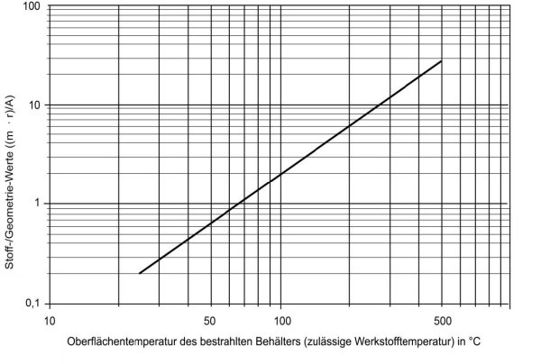

(1) Diese Anlage gilt für verflüssigte Gase, da nur für diese bei zu erwartendem Wärmeeintrag ggf. erhebliche Abblaseleistungen der Sicherheitsventile erforderlich sein können.
(2) Wird bei ortsfesten Druckgasbehältern die zulässige Betriebstemperatur (höchstmögliche Temperatur des enthaltenen Gases), z. B. durch Wärmestrahlung bei einem Brand, überschritten, so wird aufgrund des Anstieges des Dampfdruckes des Gases der Ansprechdruck des Sicherheitsventiles überschritten. Die höchsten Temperaturen stellen sich – abhängig vom Wärmeeintrag – an der nicht mit verflüs-sigtem Gas gekühlten Behälteroberfläche ein, da an diesen Stellen eine Wärmeab-fuhr nur durch die Gasphase erfolgt. An diesem Teil der Behälterwandung darf höchstens die zulässige Werkstofftemperatur erreicht werden. Diese Temperatur ergibt sich aus der Berechnung mit dem Sicherheitsbeiwert S = 1 gegen die Streck-grenze (siehe Anhang 3 Tabelle 1). Abgeleitet aus den geometrischen Verhältnissen bei der Bestrahlung eines Behälters mit einer Wärmequelle und der konservativen Annahme, dass
erhält man aus der Wärmebilanz den entsprechenden verdampfenden Massestrom des verflüssigten Gases. Diesen Massestrom muss das Sicherheitsventil in der Lage sein abzuführen. Mit weiteren Annahmen zur sicheren Seite hin, erhält man folgende Gleichung:
mit
Stellt man die Gleichung um zu
erhält man das Diagramm gemäß Abbildung 4.

Abbildung 4: Mengenbemessung für die Abblaseleistung von Sicherheitsventilen bei durch Wärmestrahlung beaufschlagten Behältern
(3) Ergeben sich danach zu große Sicherheitsventile, so ist eine genauere Berechnung mit den entsprechenden Randbedingungen erforderlich.
Für weitere Informationen siehe z. B.
(4) Die nachfolgenden Beispiele erläutern die Berechnung der erforderlichen Ab-blaseleistung eines Sicherheitsventils an einem Lagerbehälter für Propan und an ei-nem Lagerbehälter für Ammoniak.
Beispiel 1 Lagerbehälter für Propan
Die hypothetische Brandlast soll zu der zulässigen Werkstofftemperatur (Oberflä-chentemperatur im Bereich der Gasphase) von 250 °C am Lagerbehälter führen, was bei
eine Temperatur von 42 °C in der Flüssigphase des Gases ergibt (s. GWI-Bericht; die Kühlung durch Verdampfung des Gases hält die Flüssigphase auf der Tempera-tur von 42 °C; bei einer Bemessung des Sicherheitsventils mit den oben zugrunde gelegten Vorgaben ist immer eine dem Abblasedruck des Gases – d. h. dem Ein-stelldruck des Sicherheitsventils – entsprechende Temperatur gegeben).
Aus der Gleichung bzw. dem Diagramm ergibt sich bei 250 °C
Daraus folgt die über das Sicherheitsventil abzuführende Menge mit
Beispiel 2 Lagerbehälter für Ammoniak
Die hypothetische Brandlast soll zu der zulässigen Werkstofftemperatur von 260 °C am Lagerbehälter führen (s. a. Erläuterung in Beispiel 1).
Aus der Gleichung bzw. dem Diagramm ergibt sich bei 260 °C
Daraus folgt die über das Sicherheitsventil abzuführende Menge mit